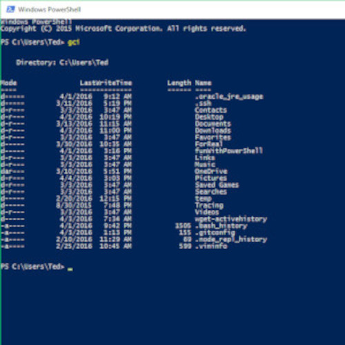
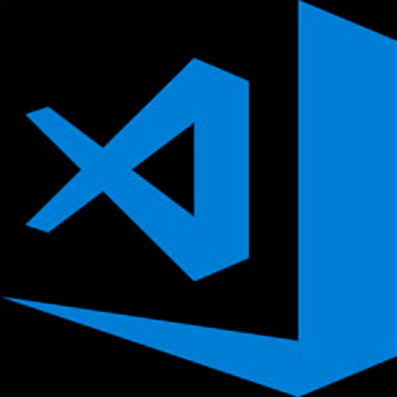

Eines i recursos utilitzats al curs de Disseny i publicació de pàgines web
-
Codepen.io
Plataforma en línia per fer proves de fragments de codi.
-
Filezilla
Client
FTP per a transferir arxius des d'un ordinador client a un servidor i viceversa -
Firefox.
És un navegador web que permet a l'usuari recuperar i reproduir documents d'hipertext, generalment escrits en HTML, des de servidors web.
-

Windows PowerShell
Windows PowerShell és una interfície de consola per a sistemes operatius Windows llançat el 2006. Permet als usuaris enviar ordres al sistema utilitzant la línia d'ordres.
-

Visual Studio Code
Visual Studio Code és un editor de codi font desenvolupat per Microsoft per a Windows, Linux i macOS. Inclou suport per a la depuració, control integrat de Git, ressaltat de sintaxi, finalització intel·ligent codi, fragments i refactorització de codi.
-
MDN Web Docs
És el lloc web oficial de Mozilla per a la documentació de desenvolupament d’estàndards web i projectes de Mozilla.
Personatges rellevants d'Internet
-
Larry Page
Lawrence Edward "Larry" Page (nascut el 26 de març de 1973 a Lansing, Michigan, Estats Units) és el cofundador de l'empresa Google Inc.
-
Marissa Mayer
Marissa Ann Mayer (Wausau, Wisconsin, 30 de maig de 1975) és una enginyera en informàtica i directiva estatunidenca. Al juliol de 2012 va esdevenir Directora executiva de Yahoo! fins al gener de 2017. És graduada en Sistemes simbòlics i en Ciències computacionals per la Universitat de Stanford
-
Sheryl Sanberg
Sheryl Kara Sandberg (Washington, 1969) és una economista, autora i directora executiva nord-americana. Actualment (2022) és la directora operativa de Facebook.
-
Tim Berners Lee
Sir Timothy John "Tim" Berners-Lee, (Londres, 8 de juny de 1955) és un enginyer informàtic britànic i professor del Massachusetts Institute of Technology. Va ser el desenvolupador del protocol "http" i fundador del W3C.